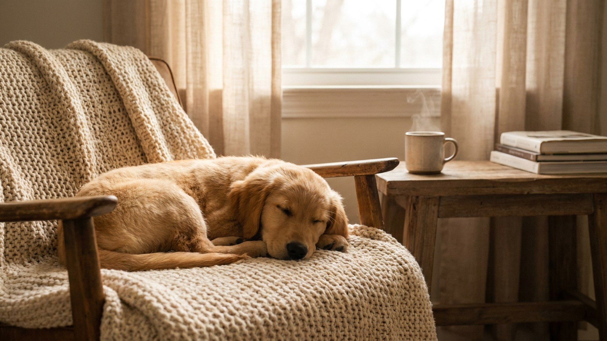

Кошка подходит к полной миске, трогает корм и уходит недовольная. Крупная собака заглатывает еду так жадно, что потом её отрыгивает. Часто дело не в характере и не в корме, а в самой миске — её форме, высоте и материале. Разбираем, какая посуда подходит кошке, какая — собаке, и каких бытовых ошибок легко избежать.
🐾 Чтобы уход не держать в голове
AnimaLife напомнит, когда стричь когти, вычёсывать, купать и обрабатывать от паразитов, и заведёт дневник по вашему питомцу. Бесплатно.
Настроить напоминания → Настроить в MAX →
У вас iPhone? AnimaLife есть в App Store
Миска — это не просто ёмкость. Глубина и ширина определяют, насколько удобно питомцу дотягиваться до корма, устойчивость — не гоняет ли он посуду по полу, а высота у крупных собак влияет на позу во время еды. Неудобная миска превращает обычный приём пищи в стресс.
У кошек к этому добавляется чувствительность усов. В узкой глубокой миске вибриссы постоянно задевают стенки, и это раздражает — отсюда «капризы» у полной тарелки. Понаблюдайте за питомцем во время еды: если он вылавливает корм лапой, разбрасывает его вокруг или ест по чуть-чуть с перерывами, дело нередко в неудобной посуде.
Объём подбирают под размер собаки, а для крупных и высоких пород часто удобнее миска на подставке — так собаке не приходится низко наклоняться. Вопрос о высоте для гигантских пород лучше обсудить с ветеринаром: универсального ответа нет.
Если собака ест слишком быстро, помогает миска-лабиринт (медленная кормушка): выступы на дне заставляют есть аккуратнее. Это снижает заглатывание воздуха и жадность у миски.
Керамика и нержавеющая сталь практичнее всего: не впитывают запахи, легко моются, служат долго. Пластик со временем царапается, в микротрещинах копятся бактерии, а у части питомцев на него бывает раздражение подбородка.
Мойте миски ежедневно, а не «по мере надобности»: подсохшие остатки корма и слизь на стенках — питательная среда для бактерий. Миску из-под влажного корма стоит мыть после каждого приёма пищи, воду — менять минимум раз в день, а саму ёмкость для воды ополаскивать, чтобы не образовывался налёт.
Правильная миска не решает всех вопросов кормления, но убирает лишний стресс за едой. Если питомец продолжает отказываться от корма, есть с явным трудом или резко изменил аппетит, дело уже не в посуде — стоит показать его ветеринару.
🐾 Заведите дневник ухода за питомцем
Вес, шерсть, обработки, прививки — всё в одном месте. А если что-то смущает, AI-ветеринар ответит круглосуточно и бесплатно.
Завести дневник → Завести в MAX →
У вас iPhone? AnimaLife есть в App Store
🐾 Понравился разбор?
Подпишитесь на канал — каждый день разбираем по одному тревожному симптому у кошек и собак: что в пределах нормы, а когда пора к врачу. Подпишитесь, чтобы не пропустить разбор, который может спасти здоровье вашего питомца.
Материал носит информационный характер и не заменяет очную консультацию ветеринара.